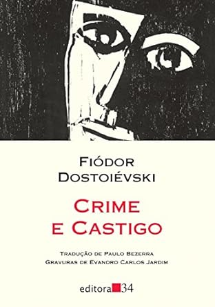
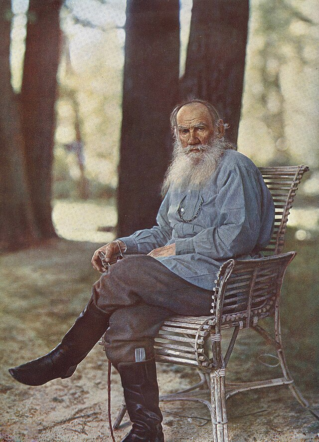
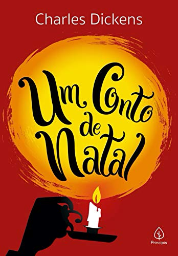
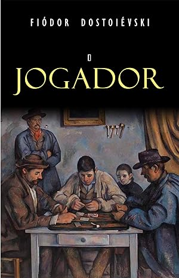

|  | Você tem que conhecer esse livro!Crime e Castigo é uma obra da liratura russa, parte dos clássicos mundiais. Escrita pelo escritor e filósofo Fiódor Dostoiévski O livro conta a história de Raskolnikov, um jovem estudante, pobre e desesperado, perambula pelas ruas de São Petersburgo até cometer um crime que tentará justificar por uma teoria: grandes homens foram assassinos absolvidos pela História. Clique para comprar! |
 | Autor de HojeLiev TolstóiLiev foi um autor russo, conhecido como um dos maiores de todos os tempos. De família aristocrata, ficou órfão de pai e mãe ainda na infância. Mais tarde, iniciou a Faculdade de Direito, mas abandonou o curso logo depois, e participou da Guerra da Crimeia. Obras para conhecer: Guerra e Paz, Anna Kariênina. Biografia |
|  | Recomendação FestivaScrooge trabalha em um escritório em Londres com o seu empregado Bob Cratchit, pai de três filhos e do pequeno Tim, que tem problemas nas penas. Na véspera do Natal, enquanto todos preparavam-se para a celebração, Scrooge, um homen avarento que domina o Natal, não via razão para tanta alegria. Até que recebe a vista do fantasma do seu falecido sócio, que se arrependeu de não ter sido bom e nem generoso em vida e acha que Scrooge tem uma chance. Autor: Charle DickensCompre já! |
 | Leia a partir de uma frase:"Você sabe que um dia eu vou te matar? Não farei isso porque não te amo mais, ou porque estou com ciúmes, mas vou fazê-lo sem motivo, simplestmente porque às vezes desejo te devorar." Fiodor DostoiévskiCompre já! |